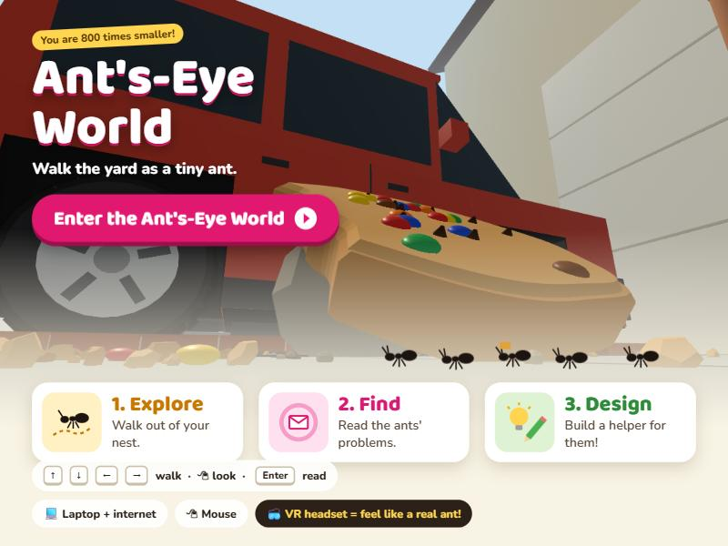
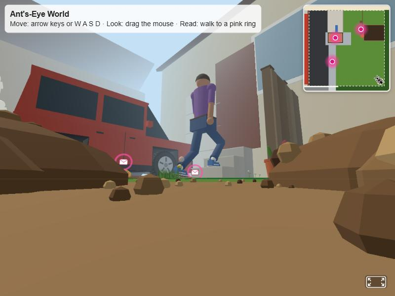

지금 우리 페이지의 버튼 확인 (GitHub Pages와 같은 파일, 컴퓨터 화면에서 찍음)

시작 페이지 (index.html) — 오른쪽 위에 버튼 없음. VR 버튼도 없음 (VR은 다음 화면에서). 페이지 안 글자 중 "VR"은 아래 알약 "VR headset = feel like a real ant!" 하나뿐

가상 세계 (world.html) — 오른쪽 위 = 지도. 오른쪽 아래 = A-Frame 버튼 하나: 컴퓨터에서는 전체 화면 표시, Quest에서는 표시 (글자 "Enter VR" 없음)
찾은 것: 우리 코드에는 "Enter VR"이라고 쓰인 버튼이 없음 (버튼 안내 글 "Enter VR mode with a headset..."는 마우스를 올렸을 때만 뜨는 숨은 설명).
그래서 선생님이 Quest에서 본 오른쪽 위 "Enter VR"은 Quest 브라우저가 스스로 띄우는 버튼일 가능성이 큼 (VR을 지원하는 페이지에 브라우저가 붙이는 것이라 우리가 모양을 바꿀 수 없음). 컴퓨터에서는 그 화면을 찍을 수 없음.
Quest에서 그 화면을 스크린샷으로 찍어 보내 주시면 그 버튼과 똑같이 맞추겠습니다.